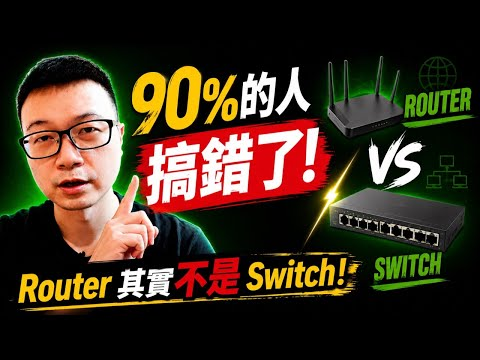
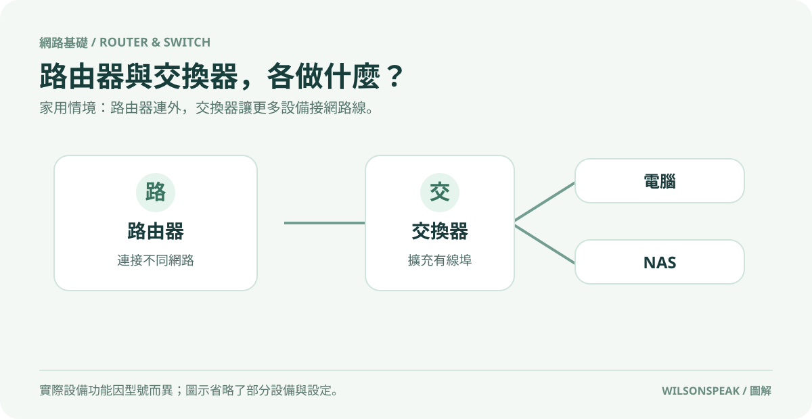

路由器和交換器有什麼不同？家用網路怎麼選

影片封面：Wilson說給你聽；點圖前往 YouTube。
釐清核心迷思：總管與擴充器的角色差異
許多人在佈置居家網路時，常將路由器（Router）與交換器（Switch）混為一談，甚至誤以為兩者功能完全相同。事實上，這兩者在網路架構中扮演著截然不同且互補的角色。簡單來說，路由器是管理網路流量的「總管」，負責分配 IP 位址、連接外部寬頻並確保資料正確路由；而交換器則是擴充有線連接的「分線器」，主要任務是在局域網內提供多個乙太網路埠，讓更多設備能透過有線方式接入網路。理解這一層級關係，是解決家中網路瓶頸的第一步。

優先順序：為什麼家裡通常先選 Router？
在規劃居家網路時，正確的思維應該是「先確定路由器，再考慮是否需要交換器」。路由器是整個家庭網路的門戶與核心，它直接決定你能否順利連上網際網路、頻寬上限為何，以及 Wi-Fi 訊號的覆蓋範圍。如果路由器性能不足或規格落後，即使後續加裝再多高階交換器，也無法提升整體上網體驗。因此，建議讀者首先評估自家寬頻合約的速率，並選擇支援對應頻寬且具備良好無線效能的路由器。只有當確認現有路由器的有線埠數不足以連接所有需要穩定連線的設備時，才需要進一步考慮引入交換器。
規格解碼：100Mbps、1000Mbps 與 2.5G 的意義
在選購交換器時，常見的介面速率標示包含 100Mbps、1000Mbps（即 Gigabit）以及 2.5G。這些數值代表的是理論上的最大傳輸頻寬。對於一般上網、串流影音或日常辦公而言，1000Mbps 的乙太網路埠已完全足夠。然而，若家中擁有大容量儲存設備（NAS）並經常進行大量檔案傳輸，或是希望未來升級至更高頻寬的寬頻服務，則建議選擇支援 2.5G 介面的交換器。需要注意的是，實際傳輸速度會受到電腦網卡、線材品質以及路由器埠速度的限制。如果路由器的相關埠只有 1000Mbps，經過該埠的流量會受其限制；但兩台同接一台 2.5G 交換器的設備，在適當設定下仍可能以較高速率互傳。因此，確認整個鏈路中每個節點的規格一致性至關重要。
應用情境：誰需要 Switch？
並非每個家庭都需要額外購買交換器。以下幾種情境特別適合加裝 Switch： 1. 有線設備眾多：當家中連接的電腦、智慧電視、遊戲主機數量超過路由器上的乙太網路埠數時，Switch 能有效擴充連接點。 2. 需要穩定連線：對於線上遊戲玩家或進行遠端工作的人員，有線連線比 Wi-Fi 更穩定且延遲更低，透過 Switch 提供專屬的有線通道可提升體驗。 3. NAS 頻寬需求：若使用 NAS 進行備份或媒體伺服器功能，且設備支援高頻寬傳輸，搭配對應速率的交換器可能改善本地傳輸能力，但實際仍受儲存設備與其他環節限制。
對於僅需連接手機、平板等無線設備，或有線設備極少的用戶，現代路由器通常已內建足夠的埠數，無需額外投資交換器。
常見問題與總結
Q: 我可以將 Switch 插在路由器前面來增加頻寬嗎？ A: 不行。Switch 僅能擴充連接埠數量，無法提升由寬頻業者提供的總頻寬上限。若覺得網路慢，應先檢查路由器規格或升級寬頻方案。
Q: 2.5G 交換器一定比 1000Mbps 好嗎？ A: 不一定。需確認你的電腦網卡、路由器埠以及使用的乙太網路線（建議 Cat5e 以上）是否支援 2.5G。流量實際經過的環節若只支援 1000Mbps，該段傳輸便受其限制。
總結來說，居家網路佈置應以路由器為核心，根據實際設備數量與傳輸需求決定是否需要交換器。明確區分兩者功能，並依據理論規格與實際環境選擇合適產品，才能打造高效且穩定的家庭網路環境。
參考影片：Router 跟 Switch 差在哪？90% 的人搞錯了！家裡網路怎麼選。文章依影片公開資訊整理，以本機 Ollama 撰寫並經編輯校對。